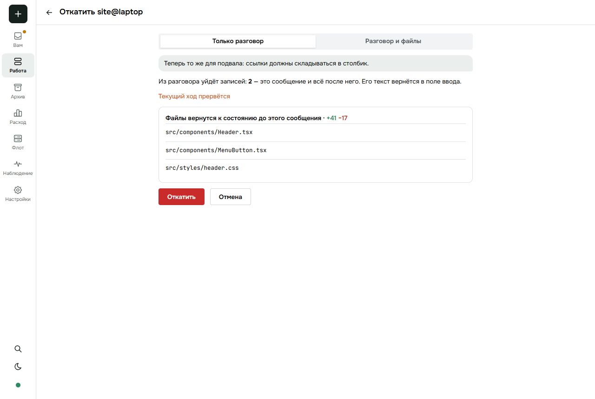
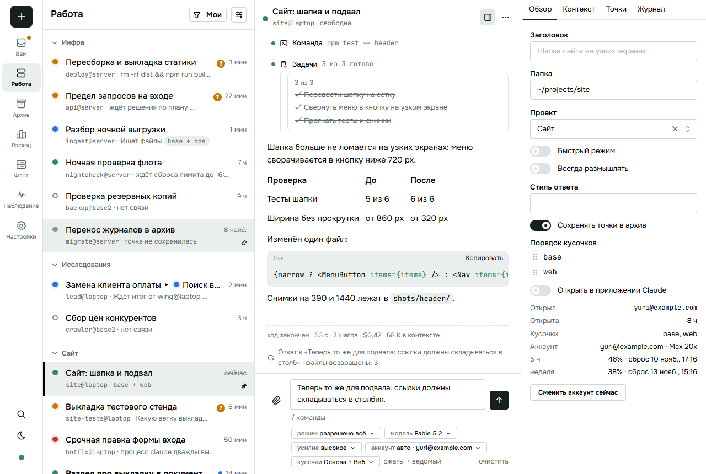
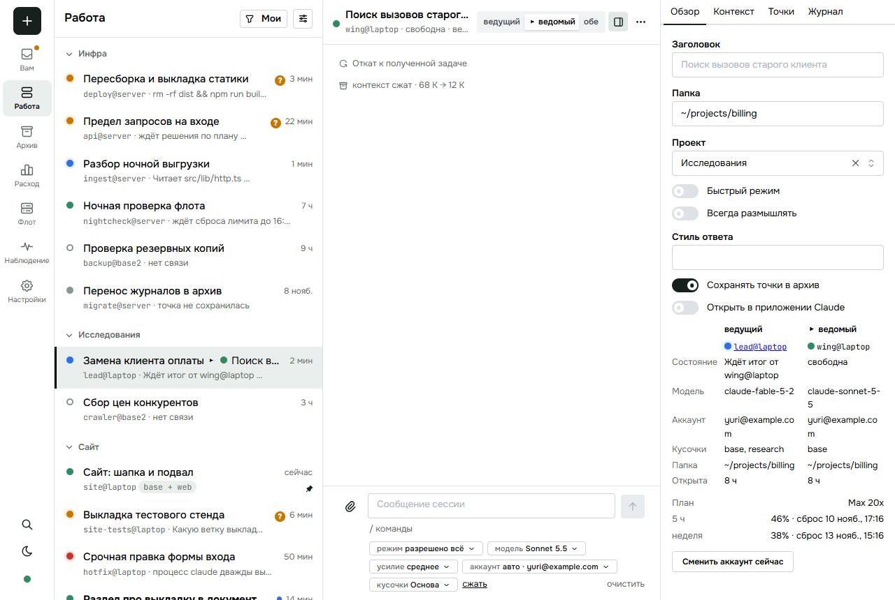
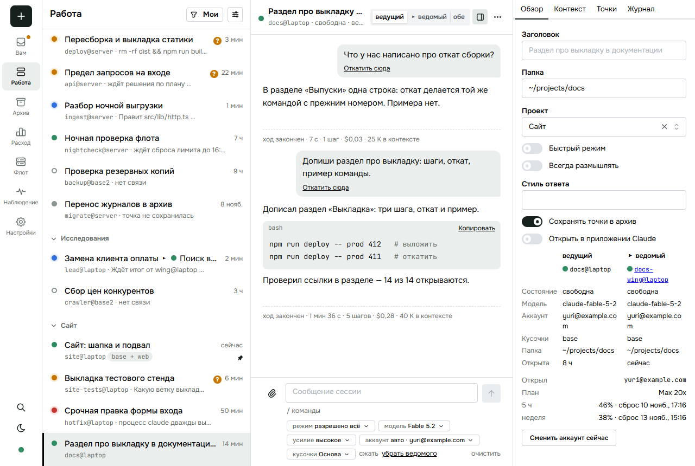
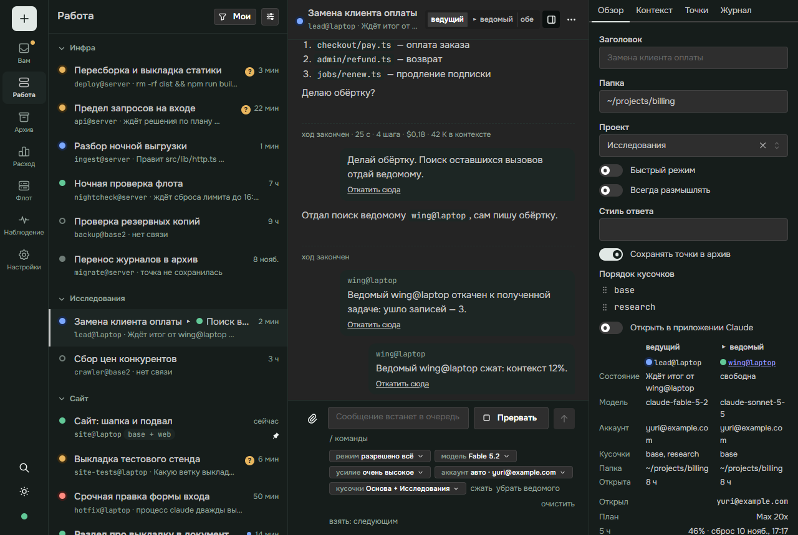
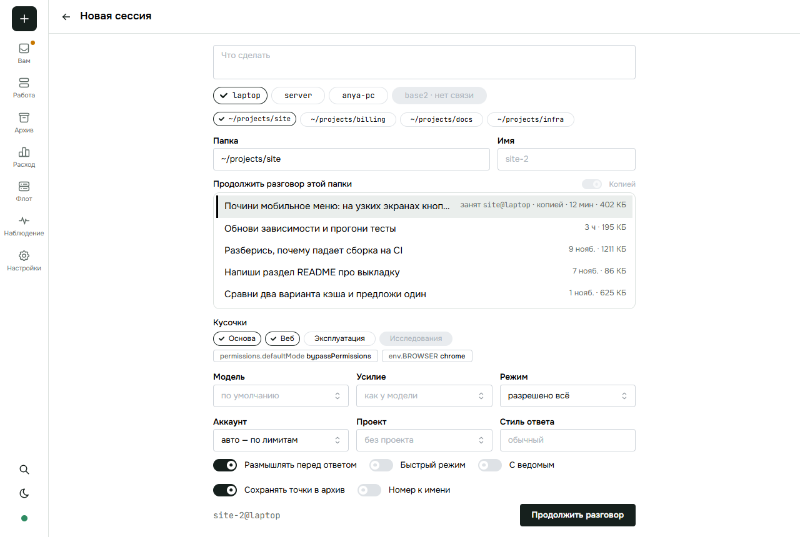
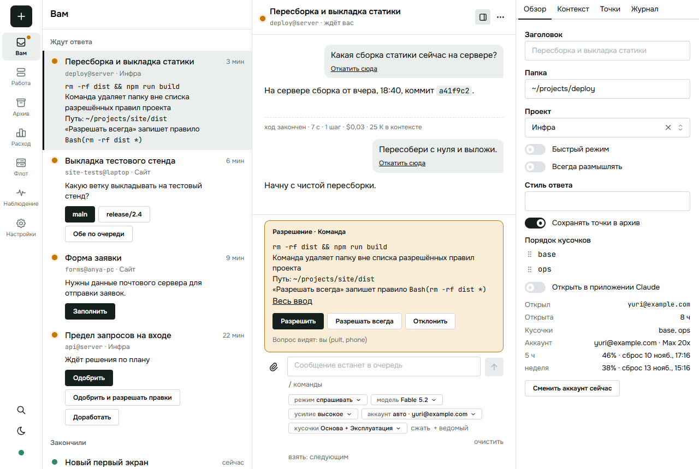
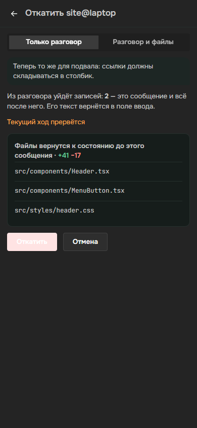
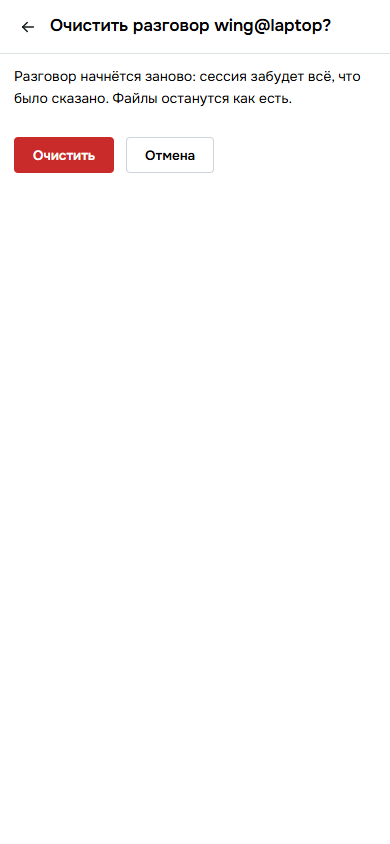
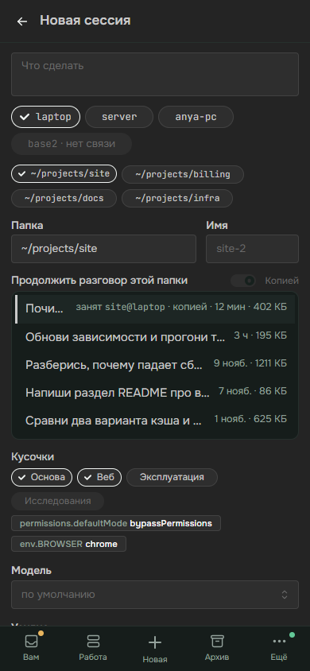

<title>Откат и ведомый</title>
<meta name="claude:viewport-fit-sides" content="cover">
<link rel="stylesheet" href="https://fonts.googleapis.com/css2?family=Inter:wght@400;500;600&family=Space+Grotesk:wght@500;600&family=JetBrains+Mono:wght@400;500&display=swap">
<style>
:root {
  --bg: #f6f5f1; --card: #ffffff; --fg: #1c211f; --muted: #66706b; --line: #d9d8d0; --soft: #eceae3;
  --accent: #1f7a63; --accent-soft: #dcefe8; --new: #b8590f; --new-soft: #fbe9d7; --bad: #b3362b; --bad-soft: #f7e1de; --code: #f0eee7;
}
@media (prefers-color-scheme: dark) { :root:not([data-theme="light"]) {
  --bg: #151917; --card: #1d2320; --fg: #e8ece9; --muted: #98a39d; --line: #343c38; --soft: #252c28;
  --accent: #5fc3a6; --accent-soft: #1d3a31; --new: #f0a25c; --new-soft: #40291a; --bad: #ef8a80; --bad-soft: #43221f; --code: #232a26; color-scheme: dark } }
:root[data-theme="dark"] {
  --bg: #151917; --card: #1d2320; --fg: #e8ece9; --muted: #98a39d; --line: #343c38; --soft: #252c28;
  --accent: #5fc3a6; --accent-soft: #1d3a31; --new: #f0a25c; --new-soft: #40291a; --bad: #ef8a80; --bad-soft: #43221f; --code: #232a26; color-scheme: dark }
body { background: var(--bg); color: var(--fg); font: 15px/1.5 Inter, system-ui, sans-serif; padding-left: max(16px, env(safe-area-inset-left, 0px)); padding-right: max(16px, env(safe-area-inset-right, 0px)); padding-block: 28px 64px; }
main { max-width: 1040px; margin: 0 auto; display: flex; flex-direction: column; gap: 36px; }
h1, h2 { font-family: "Space Grotesk", Inter, sans-serif; text-wrap: balance; margin: 0; }
h1 { font-size: 34px; line-height: 1.1; }
h2 { font-size: 21px; }
.lead { color: var(--muted); max-width: 62ch; margin: 8px 0 0; }
section { display: flex; flex-direction: column; gap: 14px; border-radius: 14px; }
section.read > h2::after { content: " ✓ прочитал"; font: 500 12px Inter, sans-serif; color: var(--accent); }
.card { background: var(--card); border: 1px solid var(--line); border-radius: 14px; padding: 16px; min-width: 0; }
.dia { overflow-x: auto; }
.dia svg { display: block; min-width: 720px; width: 100%; height: auto; }
.dia text { font: 500 13px Inter, sans-serif; fill: var(--fg); }
.dia text.s { font-size: 11.5px; fill: var(--muted); font-weight: 400; }
.dia text.m { font: 500 11.5px "JetBrains Mono", monospace; }
.n rect { fill: var(--card); stroke: var(--line); stroke-width: 1.5; }
.n.new rect { fill: var(--new-soft); stroke: var(--new); }
.n.own rect { fill: var(--accent-soft); stroke: var(--accent); }
.a path, .a line { stroke: var(--muted); stroke-width: 1.6; fill: none; }
.a.new path, .a.new line { stroke: var(--new); }
.a text { fill: var(--muted); }
.a.new text { fill: var(--new); }
[data-i] { cursor: pointer; }
[data-i]:hover rect, [data-i].on rect { stroke-width: 2.6; }
[data-i]:hover path, [data-i]:hover line, [data-i].on path, [data-i].on line { stroke-width: 3; }
.say { border-left: 3px solid var(--accent); background: var(--soft); border-radius: 0 10px 10px 0; padding: 10px 14px; min-height: 44px; }
.say b { font-weight: 600; }
.say pre { margin: 8px 0 0; }
pre { font: 12.5px/1.45 "JetBrains Mono", monospace; background: var(--code); border-radius: 8px; padding: 10px 12px; overflow-x: auto; }
.legend { display: flex; gap: 16px; flex-wrap: wrap; font-size: 12.5px; color: var(--muted); }
.legend i { display: inline-block; width: 12px; height: 12px; border-radius: 3px; margin-right: 6px; vertical-align: -1px; border: 1.5px solid var(--line); background: var(--card); }
.legend i.new { background: var(--new-soft); border-color: var(--new); }
.legend i.own { background: var(--accent-soft); border-color: var(--accent); }
.grid { display: grid; grid-template-columns: repeat(auto-fit, minmax(230px, 1fr)); gap: 12px; }
.tile b { display: block; font: 600 26px "Space Grotesk", sans-serif; }
.tile span { color: var(--muted); font-size: 13px; }
.tile code { display: block; margin-top: 8px; font: 11.5px "JetBrains Mono", monospace; color: var(--muted); overflow-wrap: anywhere; }
.shots { display: grid; grid-template-columns: repeat(auto-fit, minmax(280px, 1fr)); gap: 12px; align-items: start; }
.shots figure { margin: 0; }
.shots img { width: 100%; border: 1px solid var(--line); border-radius: 10px; display: block; }
.shots figure.ph img { max-width: 260px; }
.shots figcaption { font-size: 12.5px; color: var(--muted); margin-top: 6px; }
.et { display: grid; grid-template-columns: minmax(0, 1fr) 28px minmax(0, 1fr); gap: 8px; align-items: center; padding: 10px 0; border-top: 1px solid var(--line); }
.et:first-child { border-top: 0; }
.et .in, .et .out { font-size: 13.5px; border-radius: 8px; padding: 8px 10px; background: var(--soft); min-width: 0; overflow-wrap: anywhere; }
.et .out { background: var(--accent-soft); }
.et .ar { text-align: center; color: var(--muted); }
.et small { display: block; color: var(--muted); font-size: 11.5px; }
.gate { font: 13px/1.7 "JetBrains Mono", monospace; white-space: pre-wrap; overflow-wrap: anywhere; }
.fork { display: grid; grid-template-columns: repeat(auto-fit, minmax(200px, 1fr)); gap: 10px; }
.fork div { border-radius: 10px; padding: 10px 12px; border: 1px solid var(--line); font-size: 13.5px; }
.fork .rec { border-color: var(--accent); background: var(--accent-soft); }
.fork small { display: block; color: var(--muted); font-size: 11.5px; text-transform: uppercase; letter-spacing: .05em; }
.steps { display: flex; flex-direction: column; gap: 10px; counter-reset: st; }
.steps .card { display: grid; grid-template-columns: 34px minmax(0, 1fr); gap: 4px 12px; }
.steps .card::before { counter-increment: st; content: counter(st); font: 600 20px "Space Grotesk", sans-serif; color: var(--accent); grid-row: span 2; }
.steps .done { font-size: 13px; color: var(--muted); }
.steps .done b { color: var(--accent); font-weight: 600; }
@media (max-width: 520px) { h1 { font-size: 27px; } .et { grid-template-columns: 1fr; } .et .ar { display: none; } }
</style>

<main>
<header>
  <h1>Откат и ведомый</h1>
  <p class="lead">Разговор сессии откатывается к любому своему сообщению — с файлами или без. Ведущая сессия делает то же со своим ведомым инструментами и узнаёт о нём вестями. Работа: большая — меняет договор сессии.</p>
</header>

<section id="b-map" data-block>
  <h2>Кто кого о чём просит</h2>
  <div class="legend"><span><i class="new"></i>новое</span><span><i class="own"></i>уже есть, получает работу</span><span><i></i>без изменений</span><span>нажмите на блок или стрелку</span></div>
  <div class="card dia">
    <svg viewBox="0 0 980 430" role="img" aria-label="Схема: человек и ведущая сессия просят Host, Host работает с Claude SDK и ведомым">
      <defs><marker id="ah" viewBox="0 0 10 10" refX="9" refY="5" markerWidth="7" markerHeight="7" orient="auto-start-reverse"><path d="M0 0L10 5L0 10z" fill="context-stroke"/></marker></defs>
      <g class="n" data-i="human"><rect x="20" y="40" width="170" height="64" rx="10"/><text x="105" y="68" text-anchor="middle">Человек</text><text class="s" x="105" y="88" text-anchor="middle">страница пульта</text></g>
      <g class="n" data-i="lead"><rect x="20" y="300" width="170" height="64" rx="10"/><text x="105" y="328" text-anchor="middle">Ведущая сессия</text><text class="s" x="105" y="348" text-anchor="middle">Claude с инструментами флота</text></g>
      <g class="n own" data-i="host"><rect x="400" y="150" width="180" height="110" rx="10"/><text x="490" y="196" text-anchor="middle">Host машины</text><text class="s" x="490" y="216" text-anchor="middle">единственная точка к сессиям</text></g>
      <g class="n" data-i="sdk"><rect x="790" y="40" width="170" height="64" rx="10"/><text x="875" y="68" text-anchor="middle">Claude Agent SDK</text><text class="s" x="875" y="88" text-anchor="middle">разговор и файлы</text></g>
      <g class="n" data-i="wing"><rect x="790" y="300" width="170" height="64" rx="10"/><text x="875" y="328" text-anchor="middle">Ведомая сессия</text><text class="s" x="875" y="348" text-anchor="middle">делает задачи ведущей</text></g>

      <g class="a new" data-i="a-rewind"><path d="M190 60 C300 60 330 170 400 175" marker-end="url(#ah)"/><text class="m" x="232" y="52">session.rewind</text></g>
      <g class="a new" data-i="a-conv"><path d="M190 90 C280 100 320 200 400 205" marker-end="url(#ah)"/><text class="m" x="205" y="150">machine.conversations</text></g>
      <g class="a" data-i="a-reset"><path d="M400 160 C320 150 280 40 192 46" marker-end="url(#ah)"/><text class="m" x="290" y="118">conversation_reset</text></g>
      <g class="a new" data-i="a-tools"><path d="M190 325 C300 325 330 240 400 236" marker-end="url(#ah)"/><text class="m" x="200" y="268">rewind · call · update</text><text class="m" x="200" y="285">history · answer</text><text class="m" x="200" y="302">stop · start · remove</text></g>
      <g class="a new" data-i="a-news"><path d="M400 250 C330 262 300 345 192 345" marker-end="url(#ah)"/><text x="262" y="372">весть от ведомого</text></g>
      <g class="a" data-i="a-sdk"><path d="M580 175 C680 170 700 72 790 72" marker-end="url(#ah)"/><text class="m" x="610" y="106">rewindFiles · forkSession</text><text class="m" x="610" y="124">listSessions · /compact · /clear</text><text class="m" x="610" y="142">interrupt · reload · MCP</text></g>
      <g class="a" data-i="a-wing"><path d="M580 236 C680 240 700 332 790 332" marker-end="url(#ah)"/><text x="632" y="312">стоп и запуск разговора</text></g>
    </svg>
  </div>
  <div class="say" id="say-map" aria-live="polite">Нажмите на блок или стрелку — здесь появится пояснение.</div>
</section>

<section id="b-flow" data-block>
  <h2>Откат по шагам</h2>
  <div class="card dia">
    <svg viewBox="0 0 980 280" role="img" aria-label="Шаги отката слева направо; очистка — короткая ветка снизу">
      <g class="a" data-i="g1"><path d="M10 52 L10 40 L645 40 L645 52"/><text x="327" y="30" text-anchor="middle">сбой здесь — отказ словом, разговор и процесс прежние</text></g>
      <g class="a" data-i="g2"><path d="M670 52 L670 40 L810 40 L810 52"/><text x="740" y="30" text-anchor="middle">сбой здесь — «сбой» сессии</text></g>
      <g class="n" data-i="f1"><rect x="10" y="80" width="140" height="80" rx="10"/><text x="80" y="112" text-anchor="middle">1 · Показать</text><text class="s" x="80" y="132" text-anchor="middle">что уйдёт</text></g>
      <g class="n own" data-i="f2"><rect x="175" y="80" width="140" height="80" rx="10"/><text x="245" y="112" text-anchor="middle">2 · Прервать ход</text><text class="s" x="245" y="132" text-anchor="middle">если сессия занята</text></g>
      <g class="n own" data-i="f3"><rect x="340" y="80" width="140" height="80" rx="10"/><text x="410" y="112" text-anchor="middle">3 · Файлы</text><text class="s" x="410" y="132" text-anchor="middle">если просили</text></g>
      <g class="n new" data-i="f4"><rect x="505" y="80" width="140" height="80" rx="10"/><text x="575" y="112" text-anchor="middle">4 · Копия</text><text class="s" x="575" y="132" text-anchor="middle">разговор до сообщения</text></g>
      <g class="n own" data-i="f5"><rect x="670" y="80" width="140" height="80" rx="10"/><text x="740" y="112" text-anchor="middle">5 · Перезапуск</text><text class="s" x="740" y="132" text-anchor="middle">процесс — на копии</text></g>
      <g class="n" data-i="f6"><rect x="835" y="80" width="135" height="80" rx="10"/><text x="902" y="112" text-anchor="middle">6 · Сказать</text><text class="s" x="902" y="132" text-anchor="middle">странице и ведущей</text></g>
      <g class="a" data-i="f2"><line x1="150" y1="120" x2="175" y2="120" marker-end="url(#ah)"/></g>
      <g class="a" data-i="f3"><line x1="315" y1="120" x2="340" y2="120" marker-end="url(#ah)"/></g>
      <g class="a" data-i="f4"><line x1="480" y1="120" x2="505" y2="120" marker-end="url(#ah)"/></g>
      <g class="a" data-i="f5"><line x1="645" y1="120" x2="670" y2="120" marker-end="url(#ah)"/></g>
      <g class="a" data-i="f6"><line x1="810" y1="120" x2="835" y2="120" marker-end="url(#ah)"/></g>
      <g class="n" data-i="fc"><rect x="340" y="200" width="305" height="56" rx="10"/><text x="492" y="224" text-anchor="middle">Очистить</text><text class="s" x="492" y="242" text-anchor="middle">запрос без сообщения — команда /clear самого Claude</text></g>
      <g class="a" data-i="fc"><path d="M80 160 C80 215 200 228 340 228" marker-end="url(#ah)"/></g>
      <g class="a" data-i="fc"><path d="M645 228 C800 228 902 215 902 162" marker-end="url(#ah)"/></g>
    </svg>
  </div>
  <div class="say" id="say-flow" aria-live="polite">Нажмите на шаг.</div>
</section>

<section id="b-news" data-block>
  <h2>Вести ведущей о ведомом</h2>
  <div class="card dia">
    <svg viewBox="0 0 980 250" role="img" aria-label="Вести ведущей: четыре есть, три новые; вопрос самой ведущей вестью не дублируется">
      <g class="a" data-i="nline"><line x1="30" y1="100" x2="950" y2="100"/><text class="s" x="20" y="232">Один отправитель, один канал, одна форма: обычное сообщение от ведомого в разговор ведущей.</text></g>
      <g class="a" data-i="n3q"><line x1="345" y1="130" x2="345" y2="152" stroke-dasharray="4 4"/></g>
      <g class="n" data-i="n3q"><rect x="262" y="152" width="166" height="48" rx="10" stroke-dasharray="5 4"/><text x="345" y="173" text-anchor="middle">вопрос самой ведущей</text><text class="s" x="345" y="190" text-anchor="middle">приходит вопросом, вести нет</text></g>
      <g class="n" data-i="n1"><rect x="20" y="70" width="118" height="60" rx="10"/><text x="79" y="105" text-anchor="middle">открыт</text></g>
      <g class="n" data-i="n2"><rect x="153" y="70" width="118" height="60" rx="10"/><text x="212" y="105" text-anchor="middle">итог хода</text></g>
      <g class="n new" data-i="n3"><rect x="286" y="70" width="118" height="60" rx="10"/><text x="345" y="105" text-anchor="middle">ждёт человека</text></g>
      <g class="n new" data-i="n4"><rect x="419" y="70" width="118" height="60" rx="10"/><text x="478" y="105" text-anchor="middle">сжат</text></g>
      <g class="n new" data-i="n5"><rect x="552" y="70" width="118" height="60" rx="10"/><text x="611" y="98" text-anchor="middle">откачен</text><text class="s" x="611" y="116" text-anchor="middle">или очищен</text></g>
      <g class="n" data-i="n6"><rect x="685" y="70" width="118" height="60" rx="10"/><text x="744" y="105" text-anchor="middle">сбой</text></g>
      <g class="n" data-i="n7"><rect x="818" y="70" width="135" height="60" rx="10"/><text x="885" y="105" text-anchor="middle">снова на связи</text></g>
    </svg>
  </div>
  <div class="say" id="say-news" aria-live="polite">Нажмите на весть.</div>
</section>

<section id="b-ask" data-block>
  <h2>Вопрос о разрешении: три новых поля</h2>
  <div class="card dia">
    <svg viewBox="0 0 980 170" role="img" aria-label="Claude Agent SDK спрашивает разрешение, Host кладёт в вопрос причину, путь и правило">
      <g class="n" data-i="p-sdk"><rect x="20" y="50" width="170" height="64" rx="10"/><text x="105" y="78" text-anchor="middle">Claude Agent SDK</text><text class="s" x="105" y="98" text-anchor="middle">просит разрешения</text></g>
      <g class="n own" data-i="p-host"><rect x="270" y="50" width="170" height="64" rx="10"/><text x="355" y="78" text-anchor="middle">Host машины</text><text class="s" x="355" y="98" text-anchor="middle">собирает вопрос</text></g>
      <g class="a" data-i="p-a1"><line x1="190" y1="82" x2="270" y2="82" marker-end="url(#ah)"/></g>
      <g class="a new" data-i="p-a2"><line x1="440" y1="82" x2="512" y2="82" marker-end="url(#ah)"/></g>
      <rect x="512" y="22" width="456" height="120" rx="12" fill="none" stroke="var(--line)" stroke-width="1.5" stroke-dasharray="5 4"/>
      <text class="s" x="528" y="42">вопрос в строке сессии — карточка у человека</text>
      <g class="n new" data-i="p-why"><rect x="528" y="56" width="132" height="64" rx="10"/><text x="594" y="84" text-anchor="middle">причина</text><text class="s" x="594" y="104" text-anchor="middle">почему спросил</text></g>
      <g class="n new" data-i="p-path"><rect x="674" y="56" width="132" height="64" rx="10"/><text x="740" y="84" text-anchor="middle">путь</text><text class="s" x="740" y="104" text-anchor="middle">что задето</text></g>
      <g class="n new" data-i="p-rule"><rect x="820" y="56" width="132" height="64" rx="10"/><text x="886" y="84" text-anchor="middle">правило</text><text class="s" x="886" y="104" text-anchor="middle">у «Разрешать всегда»</text></g>
    </svg>
  </div>
  <div class="say" id="say-ask" aria-live="polite">Нажмите на блок или стрелку.</div>
</section>

<section id="b-shots" data-block>
  <h2>Как это выглядит — снимки живого прототипа</h2>
  <div class="shots">
    <figure><figcaption>Шаг отката: что уйдёт — до нажатия</figcaption></figure>
    <figure><figcaption>То же окно: лента обрезана, след отката, текст в поле ввода</figcaption></figure>
    <figure><figcaption>После «сжать» — сводка с числами</figcaption></figure>
    <figure><figcaption>Пара открывается и убирается в ряду под полем ввода</figcaption></figure>
    <figure><figcaption>Вести ведомого в ленте ведущей</figcaption></figure>
    <figure><figcaption>Разговоры папки — сразу под папкой</figcaption></figure>
    <figure><figcaption>Карточка разрешения: правило, путь, причина</figcaption></figure>
    <figure class="ph"><figcaption>Шаг отката на телефоне</figcaption></figure>
    <figure class="ph"><figcaption>«Очистить» — страница подтверждения</figcaption></figure>
    <figure class="ph"><figcaption>Разговоры папки на телефоне</figcaption></figure>
  </div>
</section>

<section id="b-facts" data-block>
  <h2>Проверено опытом на тестовом флоте</h2>
  <div class="grid">
    <div class="card tile"><b>34 → 5 за 11 мс</b><span>записей в разговоре после обрезки до второго сообщения человека; модель не вызывается</span><code>sdk.forkSession(id, { dir, upToMessageId })</code></div>
    <div class="card tile"><b>18 за 133 мс</b><span>разговоров папки с первой репликой, временем и размером — одним вызовом</span><code>sdk.listSessions({ dir })</code></div>
    <div class="card tile"><b>новый номер · 7 событий</b><span>после ввода «/clear» у сессии новый разговор, в истории только он</span><code>message { to, text: "/clear" }</code></div>
  </div>
</section>

<section id="b-etalons" data-block>
  <h2>Эталоны — чем проверяем</h2>
  <div class="card">
    <div class="et"><div class="in">Разговор из 6 записей, откат ко 2-му сообщению человека, <span style="white-space:nowrap">dry: true</span><small>чьё: слово пользователя — «видеть превью»</small></div><div class="ar">→</div><div class="out">ответ: уйдёт 4, текст сообщения; разговор и файлы не тронуты</div></div>
    <div class="et"><div class="in">Тот же откат без dry, «только разговор»<small>чьё: слово пользователя — «или просто чат»</small></div><div class="ar">→</div><div class="out">в разговоре 2 записи, номер разговора новый, файл на диске прежний, странице — conversation_reset со словами «Откат к “…”»</div></div>
    <div class="et"><div class="in">Откат в открытом окне сессии<small>чьё: слово пользователя — «то же окно откатилось до сообщения»</small></div><div class="ar">→</div><div class="out">позывной, адрес страницы и строка в «Работе» те же; лента обрезана до сообщения без перехода и перезагрузки; текст сообщения человека — в поле ввода; новой сессии и вкладки нет</div></div>
    <div class="et"><div class="in">Ведущая зовёт session.call у ведомого: mcpReconnect, reload, interrupt, compact<small>чьё: слово пользователя — «мсп релоада, мб сеттинга»</small></div><div class="ar">→</div><div class="out">метод из закрытого списка исполнен у ведомого; метода вне списка — отказ словом; после compact ведущей — весть «сжат»</div></div>
    <div class="et"><div class="in">Тот же откат с files: true<small>чьё: слово пользователя — «откатить файл и чат»</small></div><div class="ar">→</div><div class="out">сначала rewindFiles к этому сообщению, потом обрезка; порядок закреплён; в событии — «файлы возвращены: N»</div></div>
    <div class="et"><div class="in">Откат без сообщения (очистить)<small>чьё: слово пользователя — «возможность очистить»</small></div><div class="ar">→</div><div class="out">в сессию ушёл ввод /clear; история пуста; в ленте — «Разговор очищен»</div></div>
    <div class="et"><div class="in">Откат и сжатие ведомого<small>чьё: слово пользователя — «событиями»</small></div><div class="ar">→</div><div class="out">ведущей пришло по одному сообщению от ведомого на каждое событие</div></div>
    <div class="et"><div class="in">Ведомый ждёт человека: вопрос человеку или разрешение<small>чьё: слово пользователя — «событиями — ход закончен и т. д.»</small></div><div class="ar">→</div><div class="out">ведущей — весть «ждёт ответа человека», один раз на вопрос</div></div>
    <div class="et"><div class="in">Ведомый задал вопрос самой ведущей<small>чьё: код — вопрос тому, кто дал задачу, уже приходит ему сообщением</small></div><div class="ar">→</div><div class="out">ведущей — одно сообщение: сам вопрос; вести «ждёт человека» нет</div></div>
    <div class="et"><div class="in">Сообщения с таким номером в разговоре нет<small>чьё: устав — отказ словом</small></div><div class="ar">→</div><div class="out">отказ not_found, сессия работает дальше</div></div>
    <div class="et"><div class="in">machine.conversations по папке с 3 разговорами, один ведёт сессия<small>чьё: слово пользователя — «нужно превью»</small></div><div class="ar">→</div><div class="out">3 строки, новые раньше; у занятого — позывной сессии; продолжить занятый можно только копией</div></div>
  </div>
</section>

<section id="b-forks" data-block>
  <h2>Развилки вам</h2>
  <div class="card"><b>Раздел «Вам» повторяет группу «Ждут вас» в «Работе»</b>
    <div class="fork" style="margin-top:10px"><div class="rec"><small>рекомендую</small>Убрать «Вам»; первым открывается «Работа», группа «Ждут вас» — сверху</div><div><small>иначе</small>Оставить оба</div><div><small>не скажете иначе</small>Убираю при «делай»</div></div></div>
</section>

<section id="b-gate" data-block>
  <h2>Гейт</h2>
  <div class="card gate">Гейт (33 строки реестров): дубликаты ответственности 2 → 0 («Вам» и «Ждут вас» — по рекомендованной развилке; вести ведущей слали бы ядро Host и модуль разговора → одно место, ядро) · состояния 0 → 0 · логики 0 → 0 · смысла 0 → 0 · других 1 → 0 (два входа к откату файлов → один запрос) · лишние коммуникации 2 → 0 (номер разговора человек искал на машине сам → список; вопрос ведомого самой ведущей шёл бы ей дважды — вопросом и вестью «ждёт человека» → только вопросом) · циклы 0 → 0
Числа: запросы +2 (session.rewind — ядро Host; machine.conversations — модуль машины) · методы session.call −1 (rewindFiles) · инструменты модели +1 (session.call с закрытым списком методов) · поля вопроса +3 · имена договора +4 (2 запроса, 3 поля, −1 метод) · кадры 0 новых (conversation_reset страница уже знает) · вести ведущей 4 → 7 · каналы 0 новых · секреты 0 · настройки 0 · ожидаемые ветки сбоев 0 новых · эталоны 8 → 11
Работа: большая — меняет договор сессии
Сделано:
  1. Платформа раньше своего · обрезка разговора · forkSession и /clear вместо своего формата истории · выигрыш: своего кода разбора разговора 0
  2. Простые коммуникации · весть «ждёт человека» · не шлётся, когда вопрос уже пришёл ведущей вопросом · выигрыш: сообщений ведущей на вопрос 2 → 1
  3. Юнификация · вести ведущей · тот же канал, что итог хода, и один отправитель · выигрыш: новых кадров 0, отправителей 1
  4. Лишняя устойчивость · порядок отката · ход прерывается до возврата файлов, копия делается до остановки процесса · выигрыш: состояний «процесс остановлен, копии нет» 1 → 0; после остановки сбой один — обычный сбой запуска
  5. Лимит операций · откат · каждый шаг — с пределом шага остановки сессии, вышел — отказ словом · выигрыш: шагов без предела 0
  6. Less is More · откат · один запрос на «показать», «разговор», «разговор и файлы», «очистить» вместо четырёх · имён 1
  8. Юнификация · инструменты ведущей · прервать, сжать, перечитать инструменты, серверы MCP, занятость контекста — уже методы session.call: он получает описание для модели; session.compact, session.set и session.mcp не вводятся · выигрыш: новых запросов 3 → 0
  9. Удаление раньше добавления · пара · один вход «+ ведомый» под полем ввода и «убрать ведомого» на его месте; кнопки пары в «Обзоре» уходят · входов 2 → 1
  7. Простые коммуникации · обновление ленты · событие conversation_reset вместо перечитывания по ответу · выигрыш: одинаково у всех зрителей
Слово пользователя 10 нояб.: откат «только файлы» убрать — в шаге два варианта, «Только разговор» и «Разговор и файлы»; после отката то же окно: та же сессия, тот же адрес, лента обрезана на месте
Уже открыто ведущей инструментами и не меняется: session.update (модель, усилие, режим, быстрый, размышления, кусочки), session.stop, session.start, session.remove, answer, session.history
Проверено и оставлено: откат к точке архива и откат к сообщению — два разных отката (между машинами по архиву / на месте средствами Claude), второй — слово пользователя
Не трогал как редакторское: слова кнопок, имя поля upto
Слепой архитектор: пройден · критик прототипа: пройден по живой странице, принято 9 находок из 10 (след отката и очистки в ленте, «текущий ход прервётся», сводка после сжатия, один вход к паре, разговоры сразу под папкой, занятый разговор только копией, одно число записей, «очистить» отдельно, ведущая в «Обзоре» один раз); адрес шага без номера сообщения — прежняя развилка о ссылках на шаги</div>
</section>

<section id="b-order" data-block>
  <h2>Порядок реализации</h2>
  <div class="steps">
    <div class="card"><b>Договор</b><div class="done">Два запроса с описанием для модели, описание для модели у session.call с закрытым списком методов, три поля вопроса, слова в conversation_reset; rewindFiles уходит из session.call. <b>Готово:</b> тесты протокола 9 → 10, гейт импортов чист.</div></div>
    <div class="card"><b>Host · сначала живая проверка</b><div class="done">После отката разговора копией остаются ли снимки файлов для отката к более ранним сообщениям: копия по описанию SDK начинается без них. Не остаются — обрезка через resumeSessionAt вместо копии. Заодно — копия на работающей сессии. <b>Готово:</b> два отката подряд с файлами на одной сессии: файл вернулся 2 раза из 2.</div></div>
    <div class="card"><b>Host</b><div class="done">Откат (показ, прерывание хода, файлы, копия, перезапуск, conversation_reset со словами), три новые вести, разговоры папки, поля вопроса, session.call инструментом ведущей. <b>Готово:</b> тесты Host 77 → 88 — одиннадцать эталонов выше.</div></div>
    <div class="card"><b>Страница</b><div class="done">Прототип переносится как есть: шаг отката, ряд под полем ввода, список разговоров, карточка разрешения; вкладка отката файлов и кнопки пары уходят из инспектора. <b>Готово:</b> тесты страницы 212 → 218, живые флоу в Chrome 25 → 29.</div></div>
    <div class="card"><b>Тестовый флот</b><div class="done">Выкладка и живой прогон на Windows и WSL. <b>Готово:</b> записей в разговоре 6 → 2, файл вернулся, ведущая получила 3 вести из 3.</div></div>
    <div class="card"><b>«Вам» — по развилке</b><div class="done"><b>Готово:</b> разделов 7 → 6, первым открывается «Работа».</div></div>
  </div>
</section>
</main>

<script>
const INFO = {
  human: ["Человек", "Нажимает «Откатить сюда» у своего сообщения, «сжать» и «очистить» под полем ввода; в «Новой сессии» выбирает разговор папки из списка."],
  lead: ["Ведущая сессия", "Управляет ведомым теми же запросами, что и человек: они видны ей как инструменты. Новое: откат и очистка (session.rewind), а также прервать ход, сжать, перечитать инструменты, состояние и переподключение серверов MCP, занятость контекста (методы session.call). Уже есть: модель, усилие, режим и кусочки (session.update), история, ответ на вопрос ведомого, остановить, запустить, убрать."],
  host: ["Host машины", "Исполняет откат и сжатие средствами Claude Agent SDK и шлёт вести ведущей. Своего формата истории не заводит."],
  sdk: ["Claude Agent SDK", "Всё делается документированными вызовами: возврат файлов, копия разговора до записи, список разговоров, команды /compact и /clear."],
  wing: ["Ведомая сессия", "Обычная сессия с пометкой, чей она ведомый. Откат и сжатие у неё те же, что у любой другой."],
  "a-rewind": ["session.rewind — откат разговора", "upto — номер сообщения человека: оно и всё после него уходит. Без upto — разговор начинается заново. files — вернуть и файлы. dry — только показать. Исполняет ядро Host — там же, где стоп и запуск сессии.", { type: "session.rewind", id: "r1", to: "wing@laptop", upto: "e55fa7d0-4af3-4cb8-8b5a-3907be4f6d1b", files: true, dry: true }, { type: "reply", id: "r1", ok: true, result: { cut: 4, text: "Почини мобильное меню", files: ["src/components/Header.tsx"], plus: 41, minus: 17 } }],
  "a-conv": ["machine.conversations — разговоры папки", "Что лежит на диске машины в этой папке и можно продолжить новой сессией. live — сессия, которая ведёт разговор сейчас. Отвечает модуль машины в Host.", { type: "machine.conversations", id: "r2", to: "@laptop", cwd: "~/projects/site" }, { type: "reply", id: "r2", ok: true, result: { conversations: [{ id: "7e6eb2c6-…", title: "Почини мобильное меню", at: 1794301108392, size: 199238, live: "site@laptop" }] } }],
  "a-reset": ["conversation_reset — разговор начат заново", "Событие в ленте сессии: все открытые страницы обрезают ленту на месте — без перехода и перезагрузки, сессия и адрес те же. Событие несёт слова — «Откат к “…” · файлы возвращены: 3» или «Разговор очищен» — и остаётся строкой в ленте. Имя страница уже знает — нового кадра нет.", { type: "conversation_reset", text: "Откат к «Теперь то же для подвала» · файлы возвращены: 3" }],
  "a-tools": ["Инструменты ведущей", "Новое — session.rewind (откат и очистка) и описание для модели у session.call с закрытым списком методов: interrupt — прервать ход, compact — сжать, reload — перечитать инструменты и серверы, mcpStatus, mcpReconnect, mcpToggle — серверы MCP, contextUsage и status — занятость контекста и состояние. Уже есть и не меняется: session.update — модель, усилие, режим, быстрый режим, размышления, кусочки; session.history — история; answer — ответ на вопрос ведомого; session.stop, session.start, session.remove. Отдельных запросов для сжатия, настроек и MCP нет.", { type: "session.call", id: "r3", to: "site-wing@laptop", method: "mcpReconnect", args: ["github"] }, { type: "reply", id: "r3", ok: true, result: {} }],
  "a-news": ["Весть от ведомого", "Обычное сообщение в разговор ведущей от имени ведомого — тем же путём, каким приходит итог его хода. Шлёт одно место — ядро Host.", { type: "message", to: "lead@laptop", from: "wing@laptop", text: "Ведомый wing@laptop откачен к сообщению «Почини мобильное меню»: ушло записей — 4, файлы возвращены." }],
  "a-sdk": ["Вызовы SDK", "rewindFiles возвращает файлы к сообщению; forkSession делает копию разговора до выбранной записи; listSessions перечисляет разговоры папки; /compact и /clear идут вводом, как их набрал бы человек."],
  "a-wing": ["Стоп и запуск", "Процесс Claude останавливается штатно и запускается на обрезанной копии разговора — та же ветка, что обычный перезапуск сессии."],
  f1: ["1 · Показать", "Запрос с dry: true считает, сколько записей уйдёт и какие файлы изменятся. Ничего не меняется. Число записей одно для обоих вариантов; если ход идёт, страница шага говорит «Текущий ход прервётся»."],
  f2: ["2 · Прервать ход", "Занятая сессия сначала останавливает ход — иначе он продолжал бы править файлы, пока их возвращают. Процесс Claude остаётся жив: он нужен следующему шагу."],
  f3: ["3 · Файлы", "Только если выбрано «Разговор и файлы». Идёт до копии: файлы возвращает живой процесс, а у обрезанной копии разговора истории правок файлов уже нет."],
  f4: ["4 · Копия", "Копия разговора до записи перед выбранным сообщением — на диске, процесс ещё работает на прежнем. Прежний разговор остаётся на диске — его видно в списке разговоров папки."],
  f5: ["5 · Перезапуск", "Процесс Claude закрывается штатно и запускается на копии — та же ветка, что обычный перезапуск сессии. Очередь сообщений сбрасывается: они были к разговору, которого больше нет."],
  f6: ["6 · Сказать", "Страницам — conversation_reset со словами: строка «Откат к “…”» остаётся в ленте, с файлами — «файлы возвращены: N». Окно то же: позывной, адрес и строка в «Работе» не меняются. Ведущей — весть. Тот, кто откатывал, получает текст ушедшего сообщения в поле ввода."],
  fc: ["Очистить", "Тот же запрос без сообщения: шаги 2–5 заменяет команда /clear самого Claude, она идёт вводом, как её набрал бы человек. Разговор начинается заново, прежний остаётся на диске."],
  g1: ["Сбой до перезапуска", "Сообщения нет, файлы не вернулись, копия не сделалась, шаг не уложился в предел — отказ словом. Процесс и разговор прежние; возвращённые файлы назад не идут. Предел у каждого шага — тот же, что у шага остановки сессии."],
  g2: ["Сбой перезапуска", "Процесс не поднялся на копии — сессия в состоянии «сбой» с причиной, как при любом запуске. Дальше — «Запустить» или агент по журналу."],
  nline: ["Один отправитель, один канал", "Все семь вестей шлёт одно место — ядро Host — обычным сообщением от имени ведомого. Страница показывает его в ленте ведущей."],
  n3q: ["Вопрос самой ведущей", "Ведомый, которому задачу дала ведущая, спрашивает её саму: вопрос приходит ей сообщением, она отвечает инструментом. Весть «ждёт человека» об этом не шлётся — иначе на один вопрос пришло бы два сообщения, и второе — неправда."],
  "p-sdk": ["Claude Agent SDK", "Когда режим сессии не «разрешено всё», SDK спрашивает разрешение на инструмент и сам называет причину, задетый путь и правило, которое предлагает записать."],
  "p-host": ["Host машины", "Кладёт в вопрос то, что дал SDK, как есть. Текст правила собирает Host: страница его не вычисляет, только показывает."],
  "p-a1": ["Просьба разрешения", "Документированный вход SDK: инструмент, его ввод, причина, путь и предложенные правила."],
  "p-a2": ["Вопрос в строке сессии", "Тот же вопрос, что и раньше, с тремя новыми полями. Его видят тот, кто дал задачу, и зрители сессии."],
  "p-why": ["Причина", "Почему SDK спросил: например, команда удаляет папку вне списка разрешённых правил."],
  "p-path": ["Путь", "Файл или папка, из-за которых спросили."],
  "p-rule": ["Правило", "Что именно запишет «Разрешать всегда» — до нажатия. Записывается то же правило, которое показано."],
  n1: ["Открыт", "Есть сейчас: ведущая узнаёт позывной ведомого и как давать ему задачи."],
  n2: ["Итог хода", "Есть сейчас: итог каждого хода ведомого приходит ведущей сам."],
  n3: ["Ждёт человека", "Новое: ведомый ждёт ответа человека — на вопрос человеку или на разрешение. Ведущая знает, что он стоит не по её вине. Один раз на вопрос."],
  n4: ["Сжат", "Новое: после сжатия — сколько контекста занято. В ленте самого ведомого остаётся сводка сжатия с числами «было → стало»."],
  n5: ["Откачен или очищен", "Новое: к какому сообщению, сколько записей ушло, возвращены ли файлы."],
  n6: ["Сбой", "Есть сейчас: ведомый остановился со сбоем, причина словом."],
  n7: ["Снова на связи", "Есть сейчас: ведомый поднялся после перезапуска."],
};
for (const sec of document.querySelectorAll("section")) {
  const say = sec.querySelector(".say");
  if (!say) continue;
  for (const el of sec.querySelectorAll("[data-i]")) {
    el.setAttribute("tabindex", "0");
    const show = () => {
      const [title, text, ask, reply] = INFO[el.dataset.i];
      for (const x of sec.querySelectorAll("[data-i].on")) x.classList.remove("on");
      el.classList.add("on");
      say.textContent = "";
      const b = document.createElement("b"); b.textContent = title + ". "; say.append(b, text);
      for (const j of [ask, reply]) if (j) { const pre = document.createElement("pre"); pre.textContent = JSON.stringify(j, null, 2); say.append(pre); }
    };
    el.addEventListener("click", show);
    el.addEventListener("keydown", (e) => e.key === "Enter" && show());
  }
}
</script>
<script>
// метки «прочитал»: клавиша A (латинская или русская) над блоком
(() => {
  const KEY = "v2-rewind.read";
  let read = [];
  try { read = JSON.parse(localStorage.getItem(KEY) ?? "[]"); } catch {}
  let over = null;
  const draw = () => { for (const s of document.querySelectorAll("[data-block]")) s.classList.toggle("read", read.includes(s.id)); };
  for (const s of document.querySelectorAll("[data-block]")) s.addEventListener("mouseenter", () => (over = s));
  document.addEventListener("keydown", (e) => {
    if (!(e.code === "KeyA" || e.key === "a" || e.key === "A" || e.key === "ф" || e.key === "Ф") || e.ctrlKey || e.metaKey || e.altKey || !over) return;
    read = read.includes(over.id) ? read.filter((x) => x !== over.id) : [...read, over.id];
    try { localStorage.setItem(KEY, JSON.stringify(read)); } catch {}
    draw();
  });
  draw();
})();
</script>
